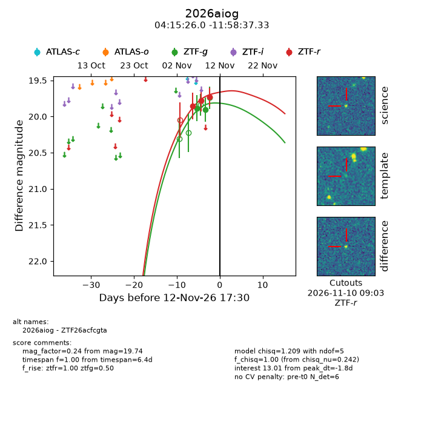
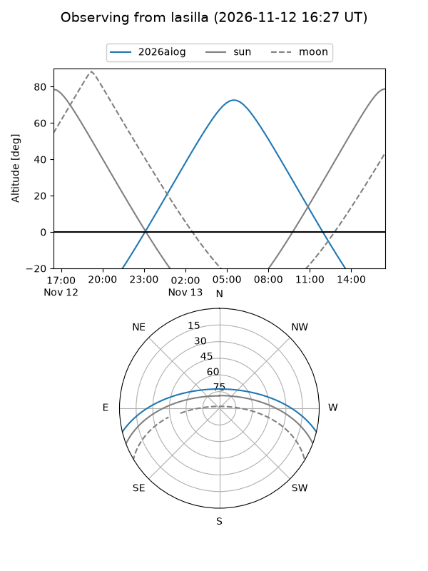
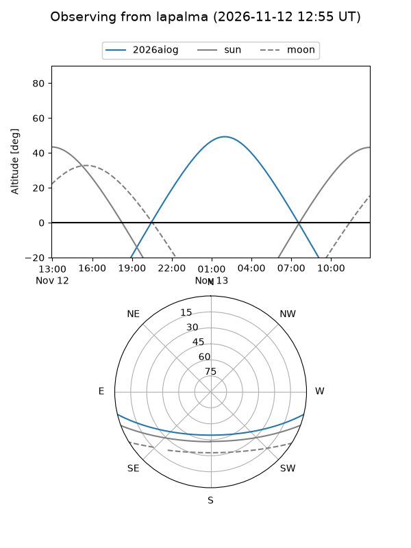
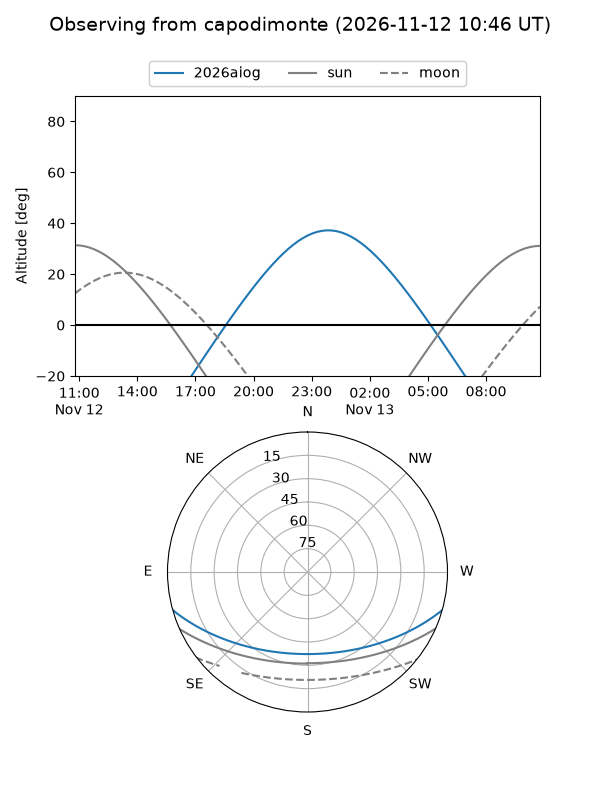
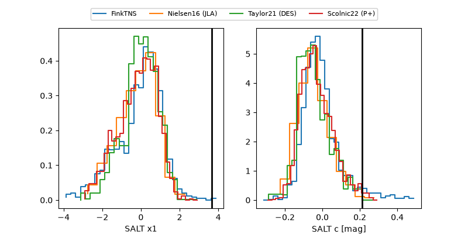

2026aiog
Target 2026aiog at 2026-11-12 17:35
Aliases and brokers:
FINK-ZTF: ztf.fink-portal.org/ZTF26acfcgta
Lasair-ZTF: lasair-ztf.lsst.ac.uk/objects/ZTF26acfcgta
ALeRCE-ZTF: alerce.online/object/ZTF26acfcgta
YSE-PZ: ziggy.ucolick.org/yse/transient_detail/2026aiog
TNS name: wis-tns.org/object/2026aiog
Direct TNS query: direct search
alt names
ZTF26acfcgta (ztf,fink_ztf)
2026aiog (tns,yse)
Coordinates:
equatorial (ra, dec) = 63.8584,-11.97704
equatorial (HMS+DMS) = 04:15:26.01,-11:58:37.33
galactic (l, b) = (205.7325,-39.98099)
Flags:
peak dt: -1.8
Photometry:
last ztfg=19.74, ztfr=19.73
3 ztfg, 3 ztfr detections
Lightcurve

Visibility



Additional plots
